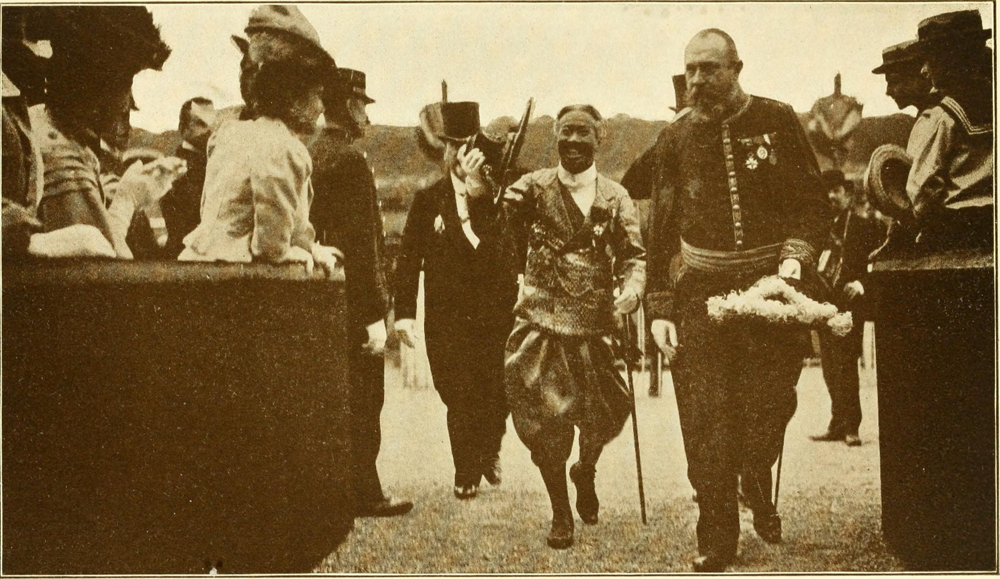
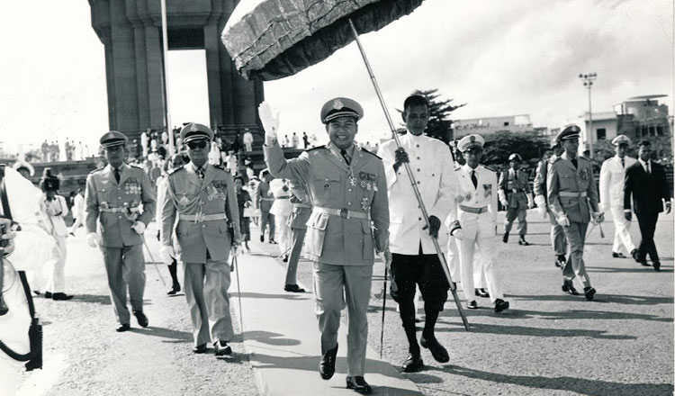

ប្រវត្តិសាស្ត្រខ្មែរ · History of Cambodia
From French colonization to the present, Cambodia has never held its sovereignty for long. Every time independence seemed within reach, a new power took it away. After French colonizers, there were Cold War powers, then the Khmer Rouge, and then international peacekeepers.

In 1863, France established a "protectorate" over Cambodia. The word was chosen carefully. A protectorate implied guardianship, not conquest. King Norodom signed the treaty because he believed French power would protect Cambodia from Siam (present-day Thailand) and Vietnamese pressure. Instead, he gave up real control over taxation, trade, and governance to a colonial administration based in Saigon.[1]
French rule in Cambodia worked through indirect control. The king stayed on the throne. French administrators controlled the country's finances, extracted rubber and rice for export, and rebuilt Phnom Penh in a French style. Rural Cambodians paid the cost through taxes and forced labor.[2]
Khmer culture was officially preserved, but that claim did not hold in practice. French administrators pushed to replace the Khmer script with a Romanized writing system, similar to what happened to Vietnamese. Buddhist monks and ordinary people resisted. The script survived, but the fight showed how far French "protection" was willing to go. Rural Cambodians also pushed back against heavy taxation and forced labor, known as corvée. These were not passive people accepting foreign rule. They resisted where they could.[1]
The protectorate was not protection. It was administration by another name: sovereignty kept on the surface, hollowed out underneath.
— Adapted from Milton Osborne, Sihanouk: Prince of Light, Prince of DarknessFrance also planted the seeds of its own undoing. The colonial education system produced a small class of Khmer intellectuals. They read French political philosophy and absorbed ideas about self-determination. They began to ask why those ideas did not apply to them. By the 1940s, the Japanese occupation of Indochina had broken the idea that European rule was natural or permanent. Japan briefly encouraged Cambodian independence in March 1945. That moment proved that French rule was a political arrangement. Arrangements can be changed.[1]

On November 9, 1953, Cambodia became formally independent. Prince Norodom Sihanouk won that independence through a very public campaign. After independence, Sihanouk abdicated the throne and returned it to his father, King Norodom Suramarit. Sihanouk himself ran as a politician. His movement, Sangkum Reastr Niyum, won nearly every seat in the 1955 election. It was a landslide that showed genuine popular support, not just political maneuvering. Cambodia was at peace, culture was growing, and national pride was real.[2]
Phnom Penh in the 1960s was a lively city. Cambodian rock music mixed with traditional sounds. Sihanouk himself wrote films and composed music. Architects trained in France designed new buildings in a Cambodian modern style. The country was poor, but it was its own.[3]
Sihanouk called Cambodia neutral, but he accepted aid from both Washington and Beijing and played each side carefully. For a time, that balance held.
But the Golden Era was fragile. The Vietnam War was consuming everything around Cambodia. The United States saw Cambodian neutrality as a problem. Sihanouk allowed North Vietnamese supply lines to run through Cambodian territory, a route known as the Sihanouk Trail. He made that choice to avoid provoking a direct American response. It was a reasonable calculation. It did not hold.[3]
In March 1970, while Sihanouk was abroad, General Lon Nol seized power in a coup. Most historians believe Washington supported it, or at least welcomed it. The new government invited American military involvement. What followed was one of the most intense bombing campaigns in history. Operation Menu and Operation Freedom Deal dropped more explosives on Cambodia than the United States dropped on Japan in all of World War II. The targets were supposed to be North Vietnamese supply lines. Most of the people who died were Cambodian civilians.[4]
The bombing did not destroy the Khmer Rouge. It created them. Before 1970, the movement was small and marginal. The bombing of the countryside drove hundreds of thousands of Cambodians into the arms of any group that promised to fight back. Ben Kiernan and Taylor Owen documented how Khmer Rouge recruitment grew in direct proportion to the bombing in each district.[4]
The United States did not intend to create the Khmer Rouge. But intention is not the same as consequence, and consequence is what history records.
By 1973, Lon Nol's government controlled little beyond the major cities. The Khmer Rouge held the countryside and had real backing from China. On April 17, 1975, Khmer Rouge soldiers marched into Phnom Penh. Residents came out to greet them. Within hours, the city was being emptied at gunpoint.[4]
The Khmer Rouge renamed the country Democratic Kampuchea and declared "Year Zero." History was to be erased. Society would be rebuilt from nothing. Cities were emptied. Money was abolished. Schools, hospitals, and temples were shut down or destroyed. The educated, the urban, ethnic Vietnamese, and Buddhist monks were all labeled enemies. In the labor camps and killing fields, an estimated 1.7 to 2.5 million people died in less than four years. That was between one fifth and one quarter of Cambodia's entire population.[1, 4]
The regime ran a network of prisons. The most known was Tuol Sleng, or S-21, a former high school converted into a torture and interrogation center. About 17,000 people entered S-21. Fewer than a dozen survived. The Khmer Rouge kept careful records: photographs, confessions, lists. Those records still exist today as evidence.[1]
What made Democratic Kampuchea different was not just its cruelty. The state did not only want to control people. It wanted to remake them into something new entirely.
— Ben Kiernan, The Pol Pot RegimeThe world largely ignored what was happening. Cold War politics made it hard for Western nations to condemn a regime that China supported. Cambodia had sovereignty on paper. In reality, the country had no freedom at all.
On January 7, 1979, Vietnamese forces entered Phnom Penh and ended the Khmer Rouge regime. For most Cambodians, it was liberation. For the international community, it was a legal problem. Vietnam was a Soviet ally, and China backed the Khmer Rouge. The United Nations continued to seat the Khmer Rouge as Cambodia's official representative for years after their fall. Recognizing the Vietnamese-backed government would have meant accepting Soviet influence in the region. Cold War logic won out over basic decency.[3, 5]
The decade that followed was slow and painful. The Vietnamese-backed People's Republic of Kampuchea tried to rebuild the country. The genocide had killed doctors, teachers, engineers, monks, and most of a generation of educated people. Rebuilding was not just political. It was rebuilding a society from almost nothing. Vietnam withdrew its forces in 1989, leaving behind a government but no final settlement.[3]
Cambodia's liberators were also its occupiers. The world refused to fully acknowledge either truth.
Years of diplomacy led to the 1991 Paris Peace Accords. The accords ended the civil conflict and arranged a ceasefire among all warring groups, including a Khmer Rouge that still existed. They also established a United Nations mission, UNTAC, with a rare mandate: to run the country through free elections.[5]
The 1993 elections run by UNTAC were a real achievement. Nearly 90 percent of registered voters turned out, despite Khmer Rouge threats. The royalist party FUNCINPEC won the most seats. Hun Sen's Cambodian People's Party came second but refused to accept the result. After a political crisis, Cambodia ended up with two co-prime ministers. The arrangement satisfied no one. It ended in 1997 when Hun Sen removed his co-premier by force and took full control.[5]
The decades since have brought real development. Poverty has fallen. Infrastructure has grown. Phnom Penh is a modern city. But democratic institutions have been steadily weakened. Opposition parties have been dissolved. Independent media has been shut down. In 2023, Hun Sen transferred power to his son Hun Manet in what was officially an election but was in practice a family handover. Cambodia today has the structure of a democracy but not the substance of one.[5]
The same pattern runs through all of Cambodia's modern history: sovereignty arrives with promise, then is taken away again, slowly or suddenly.
Whether this is the end of that cycle or just the latest version of it is still an open question. What is clear is that Cambodians have survived colonialism, Cold War conflict, genocide, occupation, and controlled democracy. That record of survival has to be at the center of any honest account of this country.